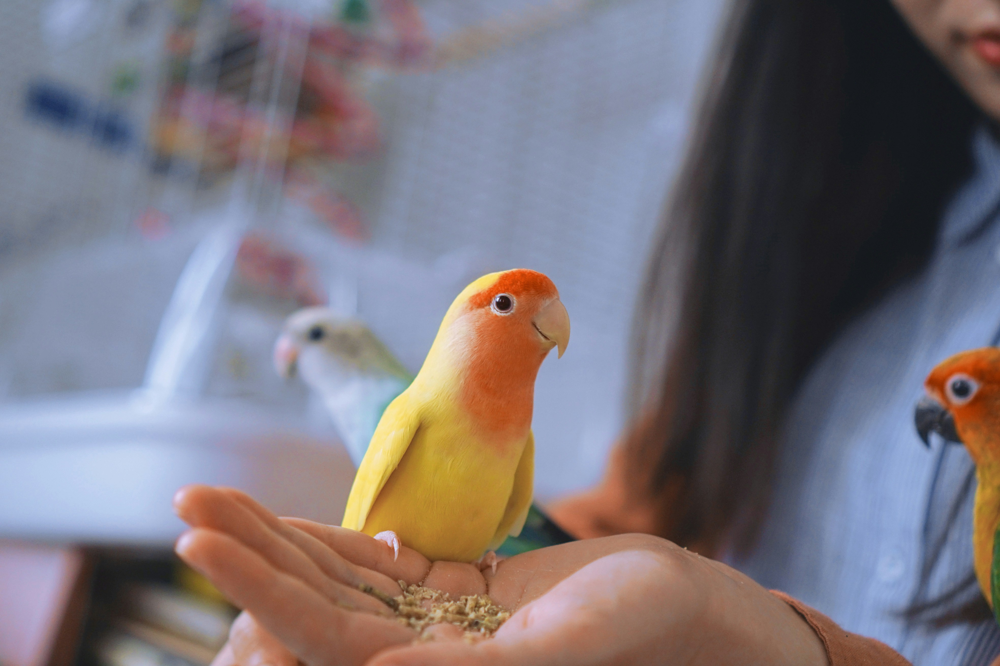

Birds
Birds are very intriguing creatures as they can range from birds as small as a Cuban bee hummingbird (about two inches long
and a little over 1/20 of an ounce) to as large as an ostrich. While most birds fly, there are some that don't. Birds are amazing
and each breed is unique in its own way, particularly when it comes to their relational needs and well-being.
Well-Being
Unfortunately, birds can experience sadness and depression just like humans. A number of root causes may be responsible for
your bird's depression such as an
illness (either physical or mental), losing its companion, or increasingly becoming bored.
Some signs to help identify if your bird is experiencing depression may include the following:
- Reduced appetite
- Becoming increasingly irritable
- Aggressive behavior
- Songs have a different, more solemn tone

Be sure to tell your veterinarian if you see signs of any of these symptoms. Just like many illnesses, identifying and treating
the symptoms earlier may drastically increase the lifespan of your birdie.